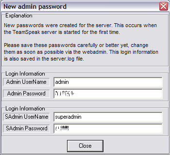
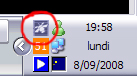
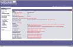
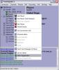
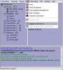
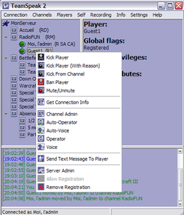

Vous êtes chef de team, de groupe divers ou tout simplement curieux et envieux de tout savoir sur la création d'un serveur TeamSpeak 2 RC2 ? Alors, vous êtes au bon endroit !
Mais qu'est-ce que TeamSpeak 2 RC2 ?
le nom complet est TeamSpeak version 2 Realease Candidate 2. Pour plus de facilité (je ne suis pas un grand écrivain), voici la "définition" que vous pourrez trouver sur Wikipédia :
"TeamSpeak est un logiciel qui permet de dialoguer avec plusieurs autres utilisateurs en même temps par l'intermédiaire d'une connexion Internet : il s'agit d'un chat vocal."
Dans ce tuto, nous irons du téléchargement du programme "serveur" à la mise en ligne, en passant bien sûr par la gestion du serveur et tout ce qui va avec !
J'espère que ce tuto fera de vous un meilleur Zér0 et vous amusera en le découvrant !
Nous allons tout de suite commencer par le plus important, le téléchargement du petit logiciel qui permettra d'héberger sur votre ordinateur votre premier serveur TeamSpeak !
Catastrophe me direz-vous, ce site est en anglais ! :(
Pas de panique, je vais vous guider pour que tout soit un plaisir, et que vous trouviez le lien de téléchargement ^^ .
En haut à droite, vous avez un cadre qui ressemble à ceci, cliquez sur FREE DOWNLOAD :
Vous arrivez sur une liste classée en trois catégories, Apple, Windows et Linux. Nous choisirons celui qui tourne sous Windows : choisissez donc TeamSpeak 2 Server en cliquant sur le bouton Download à droite.
Vous arrivez enfin sur une page avec pas mal de blabla en anglais : tout en bas, vous avez un lien I agree ; en cliquant dessus, cela vous permettra de télécharger le serveur TeamSpeak ! Cela ne prend que quelques secondes (fichier de 1.58 Mb).
Ensuite, revenez quelques pages en arrière pour retrouver la liste avec les trois catégories, faites la même chose pour "TeamSpeak 2 Server (Updated Executable)". Vous téléchargerez alors un fichier nommé "server_windows.exe". Ne vous en éloignez pas trop, on y reviendra bientôt !
Comme je suis de bonne humeur :) , si vous vous êtes perdus en chemin, voici le lien direct pour télécharger le logiciel ici.
Vous voici donc en possession du logiciel qui fera de vous des hommes on ne peut plus heureux ! (Quoique... :-° )
Installation
Maintenant, nous allons ensemble installer le logiciel. Pour ce faire, rien de plus simple, ouvrez ce que vous venez de télécharger (nommé normalement ts2_server_rc2_202319.exe).
Acceptez donc la licence (si vous refusez, il sera dur de poursuivre... :p ), choisissez l'emplacement où vous souhaitez enregistrer le logiciel, et lancez l'installation. Vous aurez ensuite droit à des Informations, elles ne sont pas des plus importantes, surtout si vous ne maîtrisez pas un minimum l'anglais. Pour finir, décochez la case Launch TeamSpeak 2 Server, nous avons une petite manip' à faire avant !
Souvenez-vous où vous aviez placé le fichier .exe téléchargé précédemment, copiez-le et collez-le dans le répertoire d'installation de votre serveur. Vous obtiendrez une alerte annonçant qu'un fichier porte le même nom, écrasez ce fichier. Une fois cette opération terminée, lancez le programme que vous venez de coller dans le répertoire...
Vous êtes directement dans le bain puisque vous vous trouvez devant une drôle de fenêtre, elle ressemble normalement à ceci :

Ces mots de passe vous permettront de vous connecter dans l'interface détaillée dans les paragraphes suivants.
Dans ce paragraphe, nous allons voir de façon large l'interface d'administration du serveur. Pour commencer, une icône s'est rajoutée à côté de l'heure, elle ressemble à ceci :

Faites un clic droit dessus et sélectionnez Administration. Une fenêtre de votre navigateur s'ouvre (si Mozilla est votre navigateur par défaut, un onglet s'ouvrira). Elle ressemble à ceci, j'espère que vous avez toujours les mots de passe car c'est maintenant que vous allez les utiliser :-° ... Suivez les instructions de l'image pour vous connecter.
(cliquez pour agrandir)
Vous voilà connectés sur l'interface administration de votre serveur TeamSpeak :D ! Une fois de plus, par malheur pour certains ( :'( ), tout est en anglais : pas de panique, nous allons tout expliquer !
Création d'un nouveau compte
Nous allons commencer par une première manipulation. Dans le menu de gauche, rendez-vous sur SuperAdmin manager, 3e titre. Nous allons créer un nouveau compte propre à nous, et ce, pour plus de facilité. Nous pouvons voir qu'un compte nommé SuperAdmin existe déjà, c'est celui avec lequel nous nous sommes connectés. Pour créer un nouveau compte, il suffit de cliquer sur add client.
Dans :
LogInName : entrez votre pseudo ;
PassWord : entrez votre mot de passe ;
et répétez votre mot de passe dans la dernière cellule.
Un message vous avertit que le compte a été correctement créé, cliquez sur CONTINUE.
Nous allons nous déconnecter, pour nous reconnecter avec le nouveau mot de passe pour voir si la manœuvre s'est correctement déroulée. Pour vous déconnecter, cliquez sur LogOut dans le menu de droite.
Normalement, vous arriverez sur un menu différent du premier. Nous verrons plus tard son utilisation ; pour le moment, cliquez sur SuperAdmin Login et connectez-vous avec le compte que vous venez de créer.
Aperçu général
Nous allons à présent voir les différents menus et leur utilisation globale...
En parcourant le menu de droite, nous avons 3 titres :
Global settings : c'est dans ce menu que les options principales seront modifiées ;
Servers : c'est dans ce menu que l'on peut trouver la liste des serveurs et les gérer ;
SuperAdmin manager : nous avons vu plus haut son utilisation, inutile de le rappeler. :D
Tiens, il y a quelque chose qui me turlupine... Tu as dit que l'on pouvait gérer des serveurs ? Avec un seul serveur, j'ai assez, moi !
Effectivement, vous avez été attentifs : en tant que SuperAdmin (votre poste) vous gérez tout, même la capacité d'ouvrir plusieurs serveurs, sur des ports différents bien sûr ! Mais nous nous contenterons d'un seul serveur ici.
Voilà, maintenant que vous avez le plan général de l'interface, nous allons pouvoir approfondir !
Vous voilà toujours dans l'interface d'administration. Commencez par aller dans le menu Global settings. Nous allons comprendre et remplir en détail tous les champs...
AdminEMAIL : très peu utilisé, voire jamais, entrez votre adresse e-mail (facultatif). ISPLinkURL : dans le cas où vous désirez ajouter une bannière dans votre serveur TeamSpeak (ce qui ne se fera pas ici) entrez l'adresse web qui servira de lien de redirection de l'image (en cliquant dessus par exemple). ISPName : en large, il s'agit du nom de l'organisation qui héberge le serveur (mais qui n'est pas visible si vous n'utilisez pas d'image). Country : lieu (pays) où se trouve le serveur, donc, où vous vous trouvez. List Public : si vous désirez que votre serveur soit "listé" parmi les autres serveurs existants, cochez la case. Ce n'est pas toujours intéressant dans le cas où des hackers pourraient se connecter sur votre PC via l'accès TeamSpeak. Donnez plutôt l'adresse de votre serveur à vos amis, ou affichez-la sur un site particulier.
On continue dans la page : vous tenez toujours le coup ? :p
WebPost settings o_O Ouh là, c'est quoi ce charabia ? Pas de soucis, peu de serveurs utilisent ce "service", nous n'allons donc pas trop nous y attarder.
WebPost PostURL : nécessaire pour lier TeamSpeak à un script de Webpost, c'est un usage spécifique qui ne sera pas utilisé ici. WebPost Enabled : décochez-le si vous ne mettez rien.
Spam settings Ces options concerneront la tolérance de votre serveur face à des utilisateurs qui sèmeraient le trouble en faisant une action répétitive (exemple : changer très vite de channel). Il sera donc éjecté automatiquement par le système.
Spam MaxCommands : donne le nombre de fois que l'action doit être répétée (dans un temps déterminé, modifiable juste en dessous). Spam InSeconds : permet de régler le temps pendant lequel le nombre de "commandes" ne devra pas dépasser "Spam max_commands" sous peine d'être éjecté par le serveur.
Généralement, on laisse ces options ; maintenant, si vous voulez être plus exigeants, réduisez le nombre de commandes maximum à 7, voire 5...
Ensuite, n'oubliez pas de cliquer sur Save, sans quoi, tous les réglages seront réinitialisés. ;)
Server List
Vous retournez donc à l'accueil de votre administration, dirigez-vous maintenant dans le menu Servers. Vous pouvez remarquer qu'il existe déjà un serveur. Vous pouvez y trouver ses principales informations (l'ID, le nom et le port UDP). Vous pouvez effectuer trois actions : l'arrêter, le supprimer et le sélectionner. Cette dernière option permettra de voir en détail le serveur. Nous allons y voir toutes les options et les régler !
Nous avons donc vu comment aller dans la liste des serveurs disponibles.
Je vais brièvement décrire cette page...
ID : il s'agit du numéro du serveur, il sert juste ici de classement, rien de plus... ServerName : nom du serveur, modifiable à volonté. Il est visible par tous sur votre serveur. UDPPort : port UDP de votre serveur. Pour faire simple, il s'agit de dire par quel chemin passeront les informations. Généralement, si on crée un deuxième serveur, on donne le port suivant (à savoir 8768)...
STOP : arrêt du serveur, toutes les options sont conservées, mais il n'y a plus moyen de s'y connecter (utile en cas de bug sérieux ou autre). DELETE : je ne pense pas qu'il faille dire grand-chose. ^^ SELECT : c'est ce que vous allez faire, vous verrez ce qui se passera !
:waw: Toute la liste s'est modifiée sur le côté ! Je suis déjà perdu... !
Effectivement, la liste a changé, mais pas complètement, il s'agit juste d'un morceau qui s'est ajouté.
Cette liste correspond donc à toutes les options précises concernant le serveur que vous venez de sélectionner !
Paramétrage précis du serveur
Comme précédemment, nous allons détailler point par point le menu de gauche. ;)
Server overview
Sur cette page, on ne peut rien modifier, mais juste regarder, nous allons donc faire cela. :p
Cliquez sur l'image pour la voir en plus grand !
Pour configurer certaines options supplémentaires, cliquez sur Server settings.
Vous avez donc de nouveau une page à configurer : ne vous inquiétez pas, c'est bientôt la dernière. Je vais donc vous expliquer chaque champ...
ServerName : vous l'attendiez, c'est ici que vous pourrez le configurer.
ServerWelcomeMessage : ce message apparaîtra dans la barre d'info (barre inférieure du TeamSpeak). Mettez-y quelque chose d'assez convaincant ! ^^
ServerPassword : mettez un mot de passe pour que n'importe qui ne puisse pas entrer sur votre serveur. C'est en général utile et cela évite bien des ennuis.
ServerMaxUsers : nombre maximum de personnes pouvant être connectées simultanément. Déterminez-le en fonction de son utilisation, de la bande passante de votre connexion, etc.
Allowed Codecs
Vous vous trouvez à présent devant une liste de noms assez bizarres, appelés Codecs.
Ces codecs définissent quel mode de "codage" va prendre le son de votre voix et de celles des autres pour qu'elles circulent... À nouveau, l'utilisation de votre serveur définira quels codecs sélectionner...
Pour une utilisation future sur Internet...
Soit vous avez une bonne connexion Internet et vous pouvez sélectionner le codec "Codec SPEEX8000". Soit vous en avez une moins bonne, choisissez plutôt un codec allant dans les "SPEEX3950"...
Si vous désirez utiliser votre serveur sur un réseau local "LAN", sélectionnez les codecs "SPEEX24600" et "GSM164", les "meilleurs" codecs disponibles.
ServerType : vous êtes à présent confrontés à deux choix. Clan Server : il permet à tout le monde de voir tout le monde (même si les autres sont dans des channels différents) Public Server : dans ce mode, les personnes connectées ne voient que les personnes de leur channel.
Server WebPost PostUrl et Server WebPost LinkUrl : nous avons déjà vu cela dans les "Options principales". Server UDP Port : vous pouvez configurer ici le port UDP de votre serveur (normalement, laissez toujours cette valeur par défaut).
Et à présent, cliquez sur Save !
Gestion des Permissions
Nous allons maintenant gérer les permissions des différents niveaux d'utilisateurs. Nous pouvons distinguer 6 catégories :
ServerAdmins : administrateurs de serveur, ils ont généralement tout pouvoir.
Channel Admin : ou littéralement "administrateur de Canal". Le plus souvent, c'est celui qui crée un canal qui en est l'admin. On verra quels "pouvoirs" lui sont octroyés.
Operator ou Opérateur : il s'agit d'un membre désigné par un Admin qui joue un rôle dans les canaux dits Modérés.
Voiced : il s'agit d'un membre qui a le droit de parole. C'est généralement le seul avantage qu'il a en plus sur le membre normal.
Registered : personne ayant un compte sur le serveur, donc généralement, cette personne apparaît comme un membre "normal".
Anonymous : personne n'ayant aucun compte, elle s'est soit connectée sans problème si aucun mot de passe n'est défini, ou alors avec le mot de passe. Ce type de membre a généralement bien moins de privilèges.
Vous pouvez donc modifier les différents privilèges des différents types de comptes. Il serait assez fastidieux de tous les analyser ; cependant, si vous avez une question, n'hésitez pas à me demander.
Nous allons quand même modifier quelques petites choses pour qu'il n'y ait pas de souci.
Server Admin : aucune modification à faire. Channel Admin :
ChannelCreateModerated (2e ligne) ;
ChannelEditOrder (8e ligne).
Tous ceux qui commencent par Priviliege sauf le premier (PrivilegeGrantCA) doivent être décochés.
Operator : aucune modification à faire.
Voiced : aucune modification à faire.
Registered :
ChannelCreateRegisterred (3e après les Admin...) ;
ChannelCreateModerated (4 lignes plus bas) ;
SendTextToOwnChannel (6e ligne en partant du bas).
Anonymous :
ChannelCreateModerated (7e ligne)
Voilà vos permissions réglées.
User Manager
Dernier point de cette interface d'administration, après, on pourra passer à l'action !
Ce menu est très ressemblant, voire identique à celui que l'on a visité tout au début (SuperAdmin manager).
Sur cette page, vous pouvez non seulement voir, mais aussi gérer les comptes inscrits sur votre serveur (tel que les supprimer, changer le mot de passe, etc.) ! Le plus simple, pour commencer, est de créer, comme pour le SuperAdmin, votre propre compte (sans oublier de cocher la case ServerAdmin. Le compte déjà créé, intitulé Admin est celui dont vous avez reçu les mots de passe en même temps que le mot de passe du ServerAdmin.
Une fois votre nouveau compte créé, vous pouvez quitter le navigateur web, nous n'en aurons plus besoin.
Nous allons à présent nous attaquer au côté plus pratique !
Maintenant que votre serveur est intégralement configuré dans le fond, nous allons pouvoir nous connecter sur le serveur via le client TeamSpeak.
Connectez-vous donc avec le compte que vous venez de créer... Le plus simple est de l'enregistrer dans la liste (Connection -> Connect...).
Je me connecte comment, chef ?
Ouh la, :honte: ne m'appelez pas encore chef ^^ ... Pour vous connecter, rien de plus simple : dans la cellule adresse, insérez votre IP (locale) et entrez votre pseudo, mot de passe, etc.
Et si je ne connais pas mon IP ?
Voici une petite marche à suivre...
Dans le menu démarrer de Windows, cliquez sur Exécuter...
Tapez cmd, une fenêtre noire s'affiche.
Tapez ensuite ipconfig.
Il s'affiche ensuite quelques lignes, votre IP s'y trouve ! ("Adresse IP............: xxx.xxx.xxx.xxx")
Ou alors, faites un clic droit sur l'icône du serveur et sélectionnez "You IP's"
Normalement, si tout se passe bien, vous devriez voir votre pseudo suivi de "(R SA)" ; si ce n'est pas le cas, c'est que vous avez oublié de cocher la case ServerAdmin. Vous vous trouvez donc à présent, seuls dans un serveur bien vide et assez moche. ^^ Nous allons remédier à ce problème !
Créations des channels
Un seul channel, ça fait un peu vide, n'est-ce pas ? Bien que les personnes qui se connectent chez vous ont la possibilité d'en créer elles-mêmes, il est préférable de faire déjà le gros du travail (et si vous jugez inutile que d'autres joueurs créent des channels supplémentaires, n'hésitez pas à le modifier dans les options, vous savez le faire maintenant !).
Commencez par éditer le channel existant nommé Defaut (RD). Pour ce faire, faites un clic droit sur le channel et ensuite sur edit Channel.
Une fenêtre s'ouvre... Elle permet donc d'éditer ce channel (vous obtiendrez, à peu de choses près, la même boîte de dialogue pour créer un channel).
Name : nom du channel (ici, comme c'est celui d'arrivée, nommez-le accueil, Principal ou même Bar si vous le considérez comme "de base").
Topic : petit mot le décrivant rapidement (vous pouvez par exemple laisser Default ou ne rien mettre).
Password : ici, c'est très simple, vous ne pouvez pas en mettre (essayez si vous ne me croyez pas :soleil: ).
Codec : les voilà, les fameux codecs ! Ceux que vous avez sélectionnés restent dans la liste...
Desc. ou Description : mettez un bref message (peut également rester vide).
Set Order : voici une option propre à l'administrateur. Elle permet de modifier la place des channels. Ici, laissez 0 pour que le channel soit en première position.
Les "flags"
Vous êtes à présent en mesure de sélectionner 3 "flags" différents (qui peuvent être cumulés). Je vais expliquer ici leur utilisation et caractéristiques.
Registered ou Enregistré : ce type de channel ne peut être créé que par l'admin (dans nos configurations actuelles). Il s'agit de channels créés et non modifiables par les autres personnes. Ici, nous n'allons créer que ce type de channel.
Moderated ou Modérée : ce type de channel est très rare et fait pour une utilisation assez spécifique... Il n'y a que les admins qui peuvent créer et gérer ce type de channels. Là, les personnes qui arrivent, par défaut, ne peuvent pas parler. Pour le faire, ils doivent demander la parole et ensuite l'Opérateur lui accordera ou la refusera. Donc, s'il n'y a personne ayant le droit d'opérateur , qu'un admin peut donner, personne ne pourra parler dans ce channel. L'utilité, me direz-vous ? Eh bien, lors de conférences organisées, une personne ayant des connaissances parle, mais pour éviter d'être interrompue, elle utilise ce système. Autre cas, lors d'élaboration de Radio...
Sub-Channel : ce type de channel permet de créer par la suite des "sous-channels". Exemple, vous créez un channel avec la mention Sub-Channel, "Battlefield" et vous y créez un sous-channel "Américains" et un autre "Japonnais". Ainsi, les deux teams ont deux lieux différents pour communiquer.
Vous pouvez ainsi continuer à créer des channels comme bon vous semble...
Interactivité avec les membres
Nous allons à présent voir comment agir en tant qu'admin (ça fait du bien de se sentir supérieur, hein ? avouez ! :D ).
Je mettrai ici quelques images qui vont certainement mieux expliquer que mes mots (je vais quand même un peu écrire ^^ ) !
Enregistrer un membre
Vous pouvez enregistrer un membre (comme dans l'interface web) à partir d'ici ; pour ce faire, cliquez droit n'importe où dans le cadre de gauche (sauf sur un channel ou une personne présente, car c'est ce channel ou cette personne que vous éditerez.) Dans la liste déroulante, cliquez sur l'avant-dernière option Admin Register Player With Server. Une boîte s'ouvre, complétez-la. Si vous désirez donner les droits d'admin à ce membre, cochez la case.
Autre mode d'enregistrement Lorsqu'un joueur est connecté, vous pouvez cliquer droit sur lui et sélectionner Allow Registration. Lui-même pourra s'inscrire en allant dans Self(voir illustrations).
Sur cette image, l'admin donne le droit d'enregistrement.
Sur cette image, la personne a reçu le droit d'enregistrement et peut s'enregistrer.
Autres "pouvoirs" :diable:

Voici donc la liste des pouvoirs que l'admin peut donner aux autres membres...
Kick Player : virez le joueur du serveur (il pourra tout de même se reconnecter). Kick Player (With Reason) : même chose que Kick player, mais en donnant une raison. Kick From Channel : utilisez ceci pour éjecter le joueur et le placer dans le channel de début (ici Accueil), vous pouvez également donner une raison. Ban Player : la pire des sanctions, bannissez le membre, il ne pourra plus se reconnecter*(voir plus bas). Mute/Unmute : cette option consiste à ignorer quelqu'un. Mais attention, ceci ne concerne que vous ! Utiliser cette option n'affectera pas le joueur, personne ne se rendra compte si vous l'utilisez. C'est juste pour vous.
Get Connection Info : donne des informations sur la personne connectée...
Channel Admin : cette option permet de donner les droits de Channel admin au joueur sélectionné. Auto-Operator : permet de donner le droit d'Opérateur du channel (si channel Modéré). Et ce, même après déconnexion. Cette option est utile dans le cas où vous pouvez décider de lui accorder le droit de parole dans les channels modérés, sans pour autant donner les droits d'Admin. Auto-Voice : cette option permet d'autoriser, à l'infini, le joueur à parler dans les channels modérés. Operator : permet de donner le droit d'opérateur, durant toute la durée de la connexion (càd que dès que le joueur se déconnecte, il perd les droits d'opérateur). Voice : donne la parole au joueur (aux mêmes conditions que l'opérateur).
Send Text Message To Player : permet d'envoyer des messages privés au joueur.
Server Admin : permet de donner les droits d'Admin au joueur. Remove Registration : permet de retirer le compte du joueur, qui donc retrouve son rang d'anonyme.
C'est à peu près tout concernant l'administration du serveur !
Vous êtes maintenant prêts pour accueillir tout le monde en réseau local ! Eh oui, une étape supplémentaire est nécessaire pour l'utiliser sur le net !
Pour que les autres personnes puissent se connecter à votre serveur (UNIQUEMENT EN RESEAU LOCAL) elles doivent entrer la même adresse que vous avez due utiliser pour vous connecter.
Le principal problème qui se pose pour lancer son serveur sur le net, c'est que la très large majorité des connexions pour particuliers est dynamique.
Mais c'est quoi, l'IP dynamique ? :euh:
Je ne vais pas m'attarder sur l'explication d'une adresse IP, mais en gros, il s'agit de l'adresse de votre ordinateur sur le net. Un peu comme celle de votre maison dans la rue, sauf qu'elle se note (généralement) par une série de 4 fois 3 chiffres (IPv4). Si cette adresse reste identique, il n'y a pas de problème, on sait vous retrouver facilement, mais c'est tout de suite plus compliqué quand elle change tous les jours... C'est comme si le facteur devait à chaque fois rechercher votre maison qui change d'adresse tous les jours...
Donc pour pouvoir rendre l'accès à votre PC, à savoir le serveur TeamSpeak que vous venez de créer, plus facile, un programme associé à un site permet de faire le transfert d'une adresse dynamique vers une adresse fixe ! Pratique, non ?
Heuu, oui... Si vous le dites...
Mouais, bon, c'est plus simple en pratique, rassurez-vous !
No-IP, la solution !
Ce petit programme, que je viens donc de mentionner se trouve sur ce site. Encore une fois, c'est en anglais...
Pour commencer, il faut s'inscrire : cliquez donc sur Sign-up Now!
Remplissez le formulaire : lorsque vous cliquez sur le bouton du bas, vous recevez un mail d'activation dans lequel vous devez trouver la phrase :
Citation : Mail d'activation
To activate your account please click the following URL: http://www.no-ip.com/activate?lid=........
Cliquez sur le lien !
Maintenant, nous allons voir la marche à suivre pour télécharger le petit programme. Sur la page où vous avez envoyé votre inscription :
cliquez sur le sigle de Windows ;
cliquez sur Download 2.2.1 ;
vous arrivez sur un autre site, cliquez sur Download Now (en grand).
Le fichier est petit (668 K), cela ira vite... Installez le fichier (Next, Next, Next, etc.). Normalement, il s'ouvre tout seul après installation. Mettez-le de côté pour le moment, on y reviendra.
Si vous avez quitté le site de NO-IP, cliquez ici.
Connectez-vous via le cadre en haut à gauche (entrez votre adresse mail, puis le mot de passe choisi). Vous arrivez dans la gestion de votre compte. Nous allons directement créer un serveur "miroir".
Dans le menu vertical de gauche, dans la partie Hosts/Redirects, cliquez sur le sous-menu Add.
Ajouter une redirection
Nous allons donc créer cette fameuse redirection. Remplissez les cases comme indiqué ci-dessous.
Hostname : nom de votre serveur (il s'agit de l'adresse que devront entrer les personnes désirant se connecter sur votre serveur). Exemple : superserveur. Juste en dessous, vous avez une liste déroulante qui indique l' "extension" (exemple: superserveur.no-ip.org).
Host Type : il s'agit des différents types de redirection, laissez DNS Host (A).
IP Address : il s'agit de votre adresse IP (la fameuse dynamique ^^ ) ne la modifiez pas.
Et laissez le reste tel quel pour ensuite cliquer sur Create Host !
Si vous allez ensuite dans Manage, vous devez normalement voir votre serveur.
On approche de la fin !
Revenez à votre programme fraîchement téléchargé. En haut à droite, cliquez sur Edit et entrez vos mots de passe comme pour vous connecter au site.
Si tout se passe bien, vous devriez voir votre serveur affiché. Dans la case inférieure, il est écrit (si tout va bien)
Citation : No-IP DUC v2.2.1
[ven. 19:05] :) superserveur.no-ip.org: DNS is current, no update needed.
Si ce n'est pas cela qui y est écrit, cochez la case à gauche du nom du serveur. Si ce n'est toujours pas bon, c'est qu'il y a un problème :( ... et il doit certainement pouvoir être résolu dans les Options.
Si vous avez un proxy, commencez par le configurer. Si vous ne possédez pas de proxy et que ça ne va toujours pas, cochez Use alternate port. Et si ça ne fonctionne toujours pas, laissez-moi un message avec une description du problème, et on essayera de trouver une solution...
Et voilà, c'est déjà la fin ! Je vous laisse profiter de votre nouvelle acquisition, et espère qu'elle vous plaira !
Si vous avez un doute, besoin d'une explication supplémentaire, de faire remarquer quelque chose ou de dire n'importe quoi d'autre, N'HÉSITEZ PAS !!! Contactez-moi par MP (ou en envoyant un mail ici) !
J'aimerais encore remercier les zCorrecteurs pour leur énorme (hé oui, l'orthographe, c'est pas mon fort ^^, ils ont eu du boulot!) travail de qualité. Merci !
Je vous souhaite une excellente journée, après-midi, soirée, nuit ou autre.

{kind=link}
{kind=link}
{kind=link}